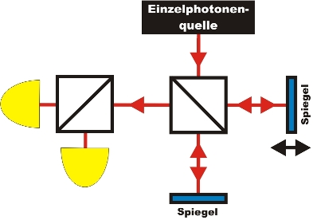

Interference Chapter 3:
Interference and indivisibility of single photons
In the last chapter it was shown that a single photon interferes with itself. The phenomenon of interference can be explained if two waves overlap. Does the photon suddenly split up at the beam splitter, however, before overlapping with itself again? With a second beam splitter, indivisibility as well as interference is to be checked. In order to do so, an additional beam splitter with two single photon detectors is set up directly behind the interferometer (pic. 1).

pic. 1: sketch of the experiment with a second 50% beam splitter behind the interferometer
Interference and divisibility of the photon?
With the following interactive experiment, the question of indivisibility in connection with interference is to be answered. Which behaviour must the two detectors behind the second beam splitter show if the photon splits up in the experiment? Which behaviour of a single photon do you expect and observe?
|
|
Observation and explanation:
In the experiment, interference of the single photon with itself can be observed at the first beam splitter. The identical photon shows indivisibility and quantum randomness at the second beam splitter. Therefore, this experiment serves to watch three quantum features at one single photon, namely those of indivisibility, randomness and interference.Does the concept of divisibility at the first beam splitter have to be revised with regards to interference? If the photon were an indivisible portion at the first beam splitter, it must take either the right or the left interferometer path. Could the photon be verified in one path? With different "markings" in each path, every single photon could be tagged with information on the path taken. This experiment is carried out in the next chapter.
For experts: Interference and second-order correlation function
As a quantitative proof of the existence of the photon as a quantum object, the second-order correlation function can be used (see existence of the photon). For the light of a conventional light bulb (thermic light), the function is g²(0)=2. For laser light (coherent light), the function is g²(0)=1. This equals the value for a monochromatic electromagnetic wave. Only when the function is g²(0)<1, there is no other explanation than the quantum nature of light. In the interactive experiment, apart from interference also the second-order correlation function is determined. For every data point, measuring took 10 times 30 seconds. Which value would you expect for the second-order correlation function?
|
|
Observation and explanation:
The second-order correlation function is always less than 1. This is unambiguous quantitative proof for an indivisible quantum object. In the interference minimum, g²(0)=0. This can also be achieved by turning off the detectors. A value g²(0)>0 in the interference minimum can only be achieved by extending the measuring time (e. g. 180s) or by accepting reduced visibility of the interference (e.g. V=60%).
Original data from the experiment: Interference
and indivisibility
To chapter 4: Which path does the single photon take in the interferometer?
Back to overview
Autor: P.
Bronner, Dezember 2008
Translation: G. Murphy